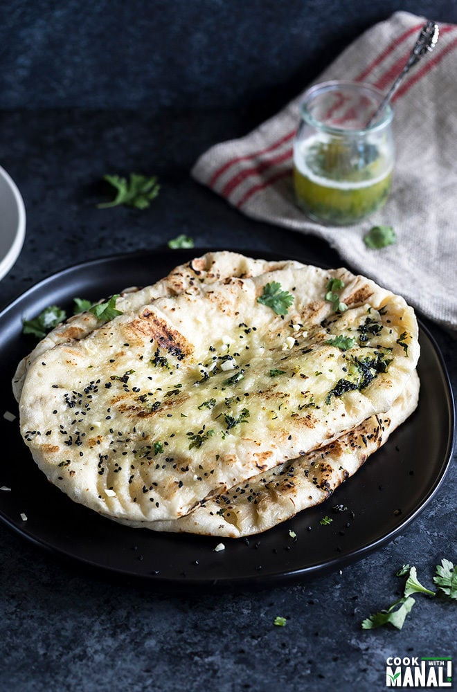

Garlic Naan

Naan is a leavened bread hugely popular in South Asia. In India, it’s one bread that’s always
on the menu of every party, wedding, birthday etc. Honestly speaking, naan isn’t something
that people in India eat everyday at home. It’s something that we grew up eating in restaurants
too. I don’t remember my mom ever making naan for us at home. What we had at home was roti and
paratha. Naan was for restaurants, just like it is today. Like most breads, naan too is made
with basic ingredients like flour, yeast, water/milk, sugar. I add some yogurt to it keep it
soft and nice. Since this recipe is for garlic naan, I also add some grated garlic to the dough
and then brush the naan with lots of garlic butter. Pair of hands taking a bite off homemade
garlic naan. I made this garlic naan on stove-top. Traditionally naan is made is made in a
tandoor (clay oven) but at home, I prefer the stove-top method. You can bake them in oven but
I think they are so much softer and better when cooked on stove-top. Also, I highly recommend
cooking these on a cast iron skillet. I have made these on non-stick and other pans, they taste
so much better when made on a cast iron.
INGREDIENTS
- 3.25 cups +3-4 tablepoons all purpose flour
- 1 teaspoon salt
- 1 cup water
- 1 tablespoon sugar
- 2 teaspoons active dry yeast
- 1/3 cup milk
- 2 tablespoons plain yogurt
- 3 tablespoons oil
- 2 large garlic cloves
- nigella seeds/kalonji
INSTRUCTIONS
- In a bowl whisk together 3.25 cups all purpose flour (423 grams) with 1 teaspoon salt. Set it aside.
- To the steel bowl of your stand mixer, add lukewarm water and then add the sugar and yeast. Let it bloom for 5-10 minutes. You will know the yeast is activated when its all bubbly and frothy on top.
- Once the yeast in activated, add to it lukewarm milk, yogurt and oil.
- Add the flour mixture and mix until combined.
- Also add the grated garlic. Start adding the remaining 3-4 tablespoons of flour (27-36 grams). Add 1 tablespoon at a time and add more if the flour is too sticky. I added around 3-4 tablespoons flour at this point. The dough will be sticky, so do not add more flour to make it dry. It just shouldn't be very sticky.
- Knead with hands or with the dough hook attachment of your stand mixer for 1-2 minutes until the dough is smooth. Transfer the dough to a greased bowl.
- Cover the bowl with a kitchen towel and the the dough rise in a warm place for 60-90 minutes. If it cold where you live, pre-heat your oven for few minutes and then turn it off. Then place your dough inside the oven (remember the oven should be off!)
- After around 90 minutes, the dough will be more than double in size. Punch the dough lightly to release the air.
- Divide the dough into 8 equal parts (around 100-105 grams each). Dough will be sticky so oil your hands while dividing the dough. Cover the dough balls with a kitchen towel and let them rest for 10-15 minutes.
- Meanwhile melt 3 tablespoons of butter, add minced garlic and chopped cilantro to it. Keep the garlic butter ready to brush on the naan.
- Heat up an iron skillet on medium-high heat. I really recommend using an iron skillet to make these naan.
- Take a dough ball and roll it into an oval shape, around 10 to 11 inches long and 6 inches wide. Apply little oil on top of the dough before you try to roll it. Also oil your roller. Do not try to roll the dough like you would roll a tortilla/roti/paratha. Simply stretch it length wise and then width wise.
- Dip your finger in water and then sprinkle some nigella seeds on top. This is optional.
- Transfer the rolled naan onto the hot skillet. Let it cook for couple of minutes until you see bubbles on top. Brush the naan at this point with the prepared garlic butter.
- With the help of a tong, remove the naan from skillet, flip and transfer directly to the gas. There will be a little mess as the butter will pour down - don't worry, it's okay. If you want you can cover your burner with aluminium foil before you begin cooking the naan.
- Cook the garlic naan for 15-20 seconds (directly on gas) until nicely golden brown from both the sides.
- Remove from heat and brush with more garlic butter. Serve these homemade garlic naan with dal makhani or butter paneer!